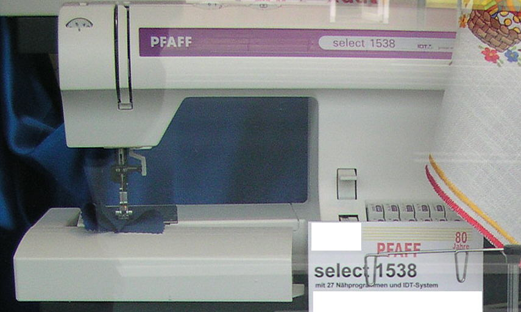
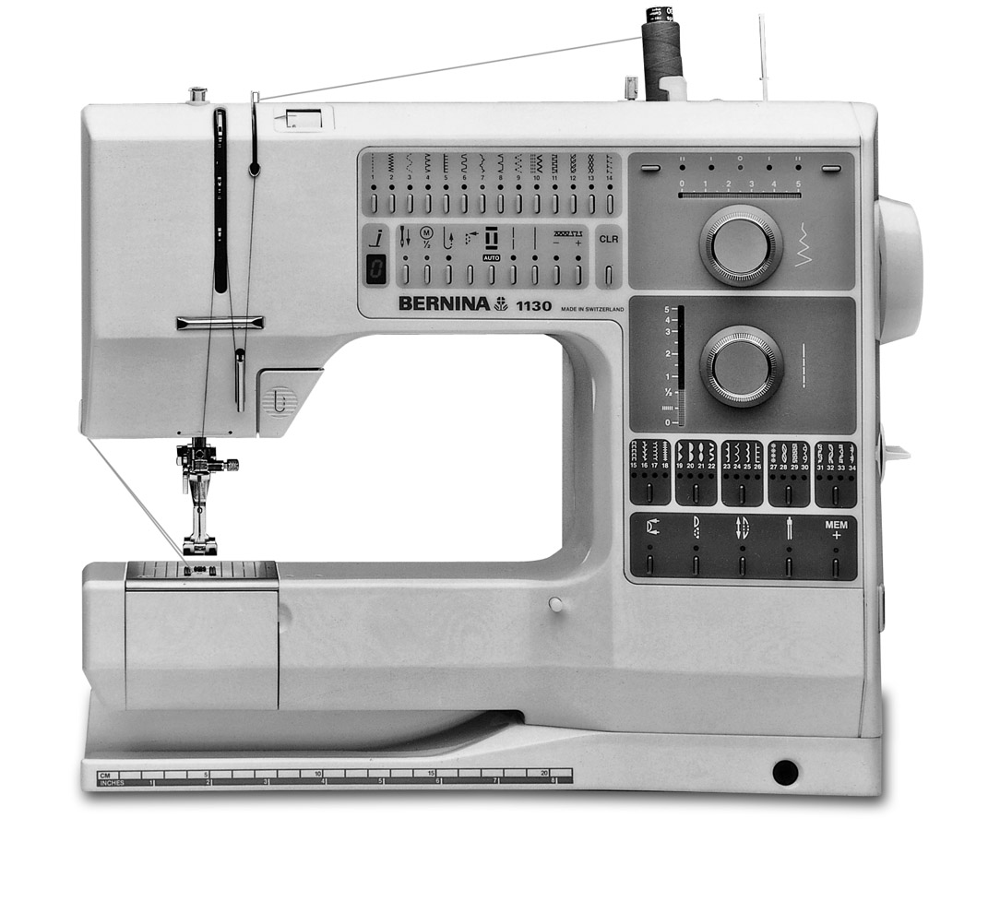

Pfaff Creative 1471
The first domestic computer that sewed — programmable stitches, an LCD, and a counting bug

Overview
The Pfaff Creative 1471 was the first Pfaff sewing machine with a built-in computer, a display readout, and the ability for the user to program in their own stitches. Pfaff's official corporate history dates the milestone to 1984: 'PFAFF released their first computerized sewing machine with IDT and the ability to program in your own stitches.' A 1979 Pfaff had been the world's first 'programmable' sewing machine — electronic pattern memory without a display; the 1984 model added the computer proper, the display, and user programming. The machine was made by G.M. Pfaff AG in Kaiserslautern, West Germany, and sold for roughly US$1,000–1,400 at launch.
The interaction model is what makes it an HCI artifact rather than just an appliance. Where earlier machines had stitch patterns cut into physical cams, the 1471's microprocessor selected stitch shapes in software. The user picked from 99+ built-in stitches via push-buttons on a control panel, read the stitch number and settings off an LCD, and could chain stitches into a sequence, store it in memory, and recall it later — the machine then executed the programmed decorative stitch run. It also carried Pfaff's signature IDT (Integrated Dual Transport) feed dogs for even fabric feeding, and a one-step buttonhole that worked by counting stitches rather than stitching to a mechanical end-stop — a quirk owners document: if the fabric bunched, the count drifted and the buttonhole came out wrong. A computer's counting model, leaking into the physical world.
The Creative 1471's line continued through the 1473 and the 1475CD (1991, which added 214 stitches and Creative design software on floppy disk). Its era rivals were the Bernina 1130 (1986, the first computerized Bernina) and the Husqvarna Viking 'Computer' series. The Pfaff brand later passed to Husqvarna Viking (1999) and then to SVP Worldwide (2006), which still produces Pfaff machines today.
Deep dive
Before the 1471, decorative stitches were cut into metal cams — a physical, mechanical pattern library. The 1471 replaced cams with a microprocessor: stitch shapes became data, selected by buttons and executed by the motor under software control. The same conceptual shift the museum tracks elsewhere — physical encoding becoming digital — but in the most domestic context imaginable.
The 'computer' part of the machine was its memory. Users could chain stitches into a sequence, store the sequence, and recall it to run a programmed decorative pattern. Pfaff's 1988 creative Designer feature let users create and copy their own stitches — user-authored pattern data, a decade before embroidery software on home PCs.
The 1471 made one-step buttonholes by counting stitches from the start point rather than stitching to a mechanical stop. Owners document that if the fabric bunched under the foot, the count drifted and the buttonhole came out wrong. It is a perfect example of a digital abstraction (counting) imperfectly mapped onto a physical process (sewing) — the texture of early embedded computing in the home.
The sewing machine market was enormous and overwhelmingly female. Pfaff machines sold in the hundreds of thousands; a computerized Pfaff in the mid-1980s meant a domestic computer in households that might never touch a PC. The museum's collection is otherwise full of computers for work, school, and play — this is the first one that lived in the sewing room.
Team & pioneers
- G.M. Pfaff AG. Manufacturer, Kaiserslautern, West Germany. Founded 1862 by Georg Michael Pfaff; the founding machine is in the Deutsches Museum, Munich.
- Pfaff engineers. No individual engineers are named in accessible sources for the 1471; the German corporate history (Rolf Müller, 'Pfaff Dokumentation') would be the primary lead.
Media

Sources
- PFAFF official history (SVP Worldwide/Singer Europe) — 1979 programmable, 1984 computerized
- PatternReview — Pfaff 1471 owner reports and pricing
- Wikipedia — Pfaff (company history)
- Wikipedia — Bernina International (1130, 1986–89, first computerized Bernina)
- Wikipedia — Sewing machine (electronic machines section)
- ISMACS — History of the Pfaff Sewing Machine Company